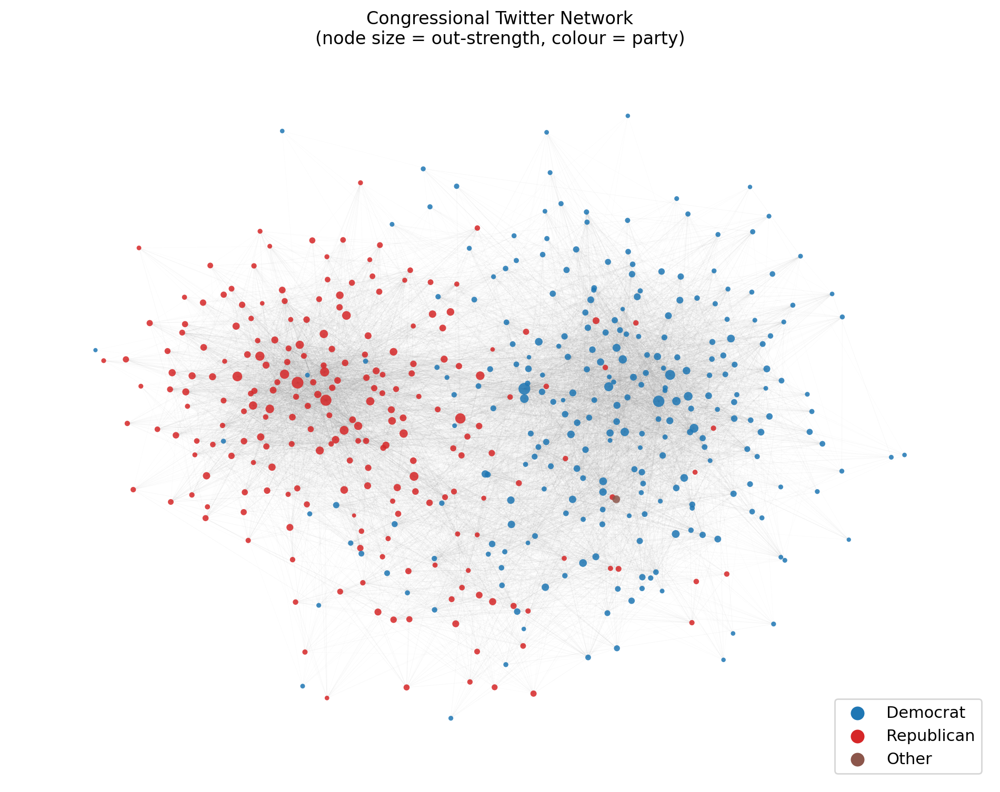
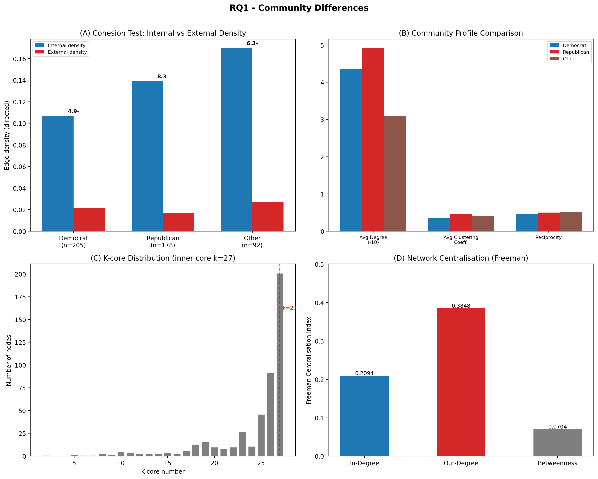
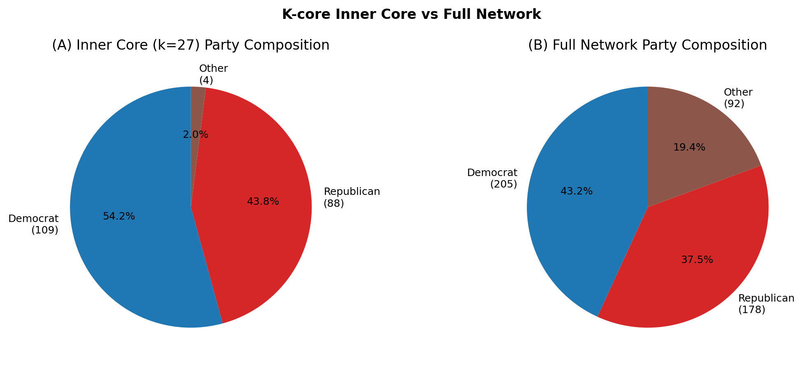
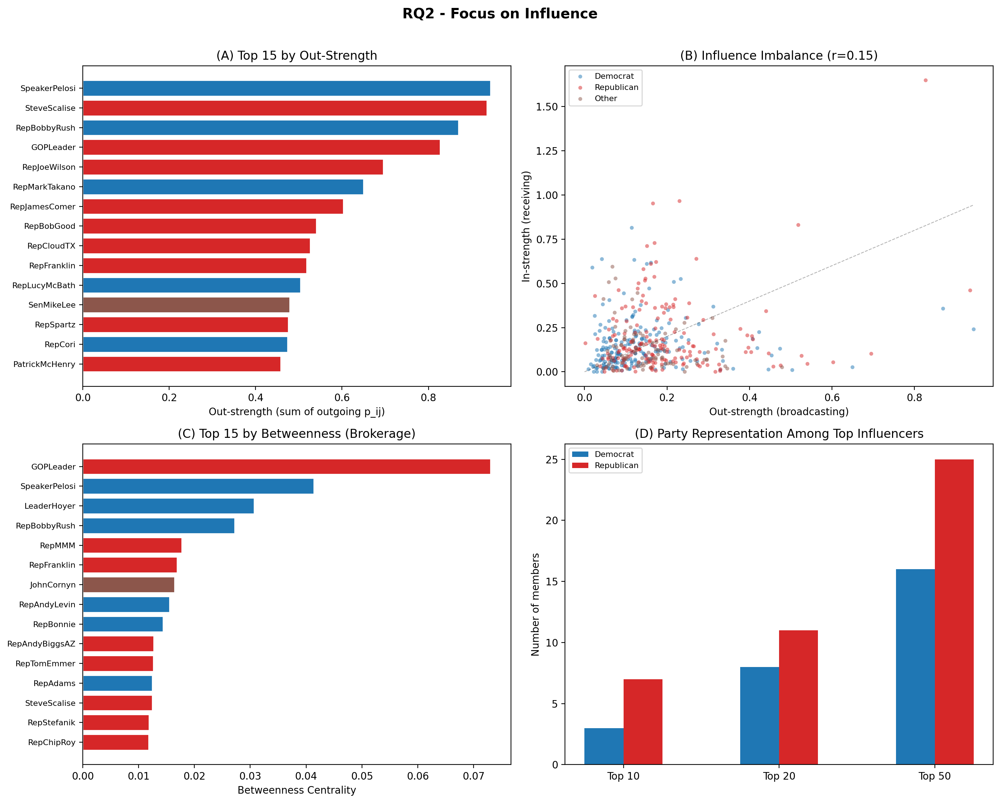
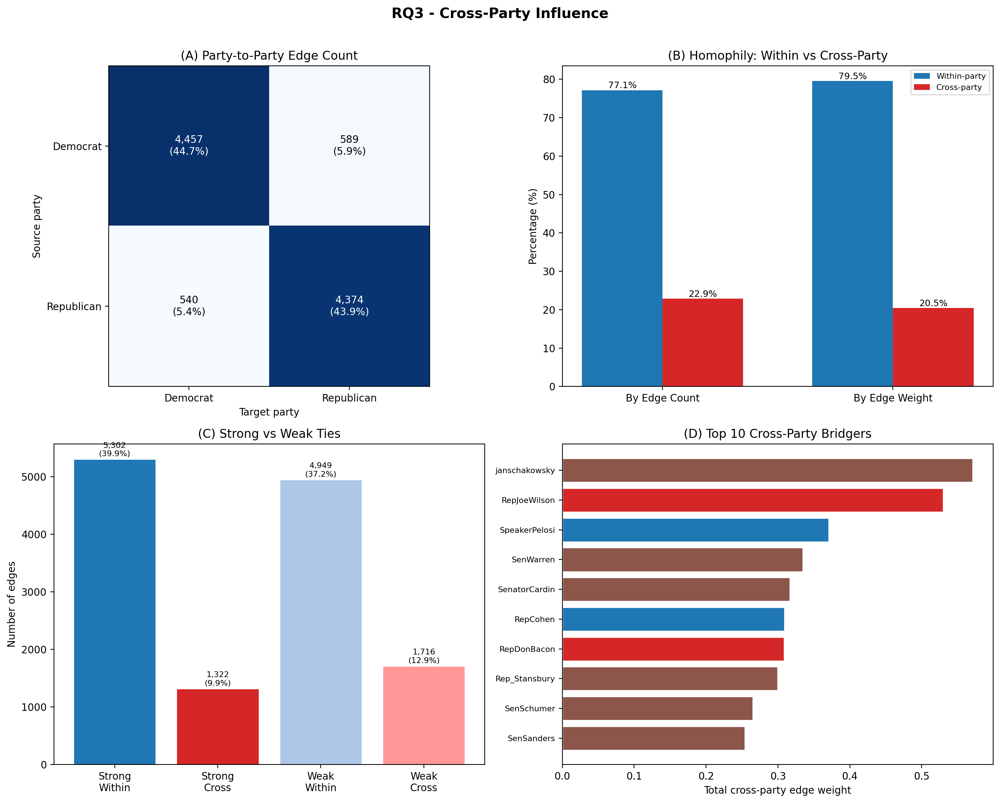
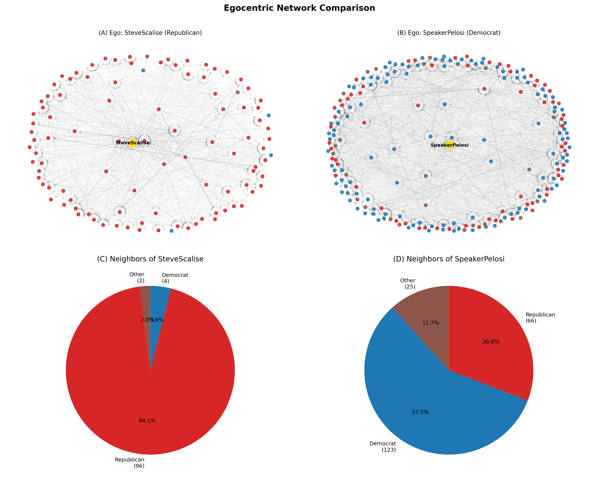
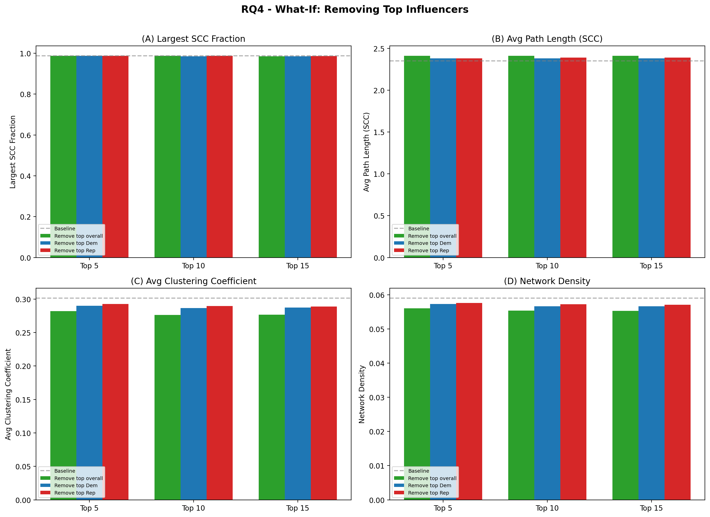
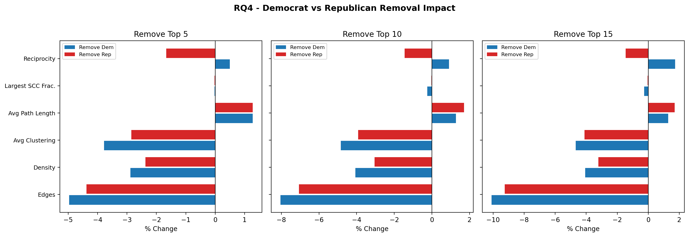

AY25/26 Semester 2
Final Report
Group 1
| Name | Matriculation |
|---|---|
| HAN LIHUI | A0265957J |
| LI XUAN | A0287600E |
| JERIN PAUL | A0227170M |
| ZHANG LONGSHENG | A0287626N |
This report analyses the Twitter Interaction Network of the 117th U.S. Congress to understand how political influence flows among legislators on social media. Using a directed, weighted network of 475 members and 13,289 edges, we address four research questions covering community structure, individual influence, cross-party information flow, and network resilience to node removal.
Key findings:
This study uses the Twitter Interaction Network for the U.S. Congress, obtained from the Stanford Network Analysis Project (SNAP). The dataset consists of publicly available Twitter interactions among members of the 117th U.S. Congress, originally collected via the Twitter API (Tweepy) as of 9 June 2022 (Fink, Omodt, Zinnecker, & Sprint, 2023).
Tweets created outside the common observation window (9 February to 9 June 2022) were excluded. Members tweeting fewer than 100 times during this window were also excluded (Fink et al., 2023). The final dataset contains 475 active members and 13,289 directed edges.
Two forms of sampling bias are acknowledged:
For each ordered pair of members (i, j), all interactions (retweets, replies, mentions, quote tweets) by i that reference j were counted. This raw count was then normalised by the total number of tweets posted by i during the observation window, producing a pairwise influence probability (Fink et al., 2023):
$$p_{ij} \;=\; \frac{n_{ij}}{T_i}$$
where n_ij is the number of tweets by i that interact with j (retweets + quote tweets + replies + mentions) and T_i is i’s total tweet count during the observation window. Each p_ij lies in (0, 1] and represents the probability that a random tweet from i references j.
The resulting network is directed (influence is asymmetric: p_ij ? p_ji in general), weighted (by these probabilities), and unimodal (Congress members only). All 13,289 edges carry a non-zero weight; pairs with zero interactions have no edge.
Key concepts and definitions used in this report:
Degree and strength. Out-degree is the number of distinct members a node directs edges toward; in-degree is the number directing edges toward it. In a weighted network, degree alone does not capture interaction intensity. Strength (Barrat et al., 2004) addresses this by summing edge weights instead of counting edges:
siout = ∑j ∈ Nioutpij siin = ∑j ∈ Niinpji
Out-strength is the total fraction of a member’s tweets directed at other Congress members; in-strength is the total attention received (it can exceed 1 because it sums probabilities from different senders). Out-strength is the primary measure of broadcasting effort used throughout this analysis.
Centrality measures. Betweenness centrality measures the fraction of all shortest paths in the network that pass through a given node – high betweenness indicates a broker or gatekeeper. Closeness centrality measures how quickly a node can reach all others via shortest paths. Eigenvector centrality measures influence by accounting for the importance of a node’s neighbours – a node connected to other well-connected nodes scores higher. Centralisation is a group-level metric that summarises how much the network’s centrality is concentrated in a few nodes: a value near 1 resembles a star; near 0 means evenly distributed.
Community and cohesion. Homophily is the tendency for nodes to form ties with similar others (e.g. same party). Edge density is the fraction of possible edges that actually exist: edges / (n x (n-1)) for a directed graph. A community is cohesive if its internal density substantially exceeds its external density. K-core is the maximal subgraph where every node has degree at least k; higher k reveals the densest inner core. Clustering coefficient measures the fraction of a node’s neighbours that are also connected to each other.
Tie properties. Reciprocity is the fraction of edges that are mutual (if A directs an edge to B, B also directs one to A). Strong ties are edges with weight above the median; weak ties are at or below the median, following Granovetter’s (1973) framework. Weak ties are more likely to bridge across communities.
Connectivity. A weakly connected component (WCC) is a maximal set of nodes where every node can reach every other if edge direction is ignored. A strongly connected component (SCC) requires mutual reachability following edge direction. An articulation point is a node whose removal would disconnect the graph.
Viral Centrality (VC) (Fink et al., Physica A, 2023) is a cascade-based influence measure. The dataset authors published the algorithm alongside the network data; we ran it on the edge weights to compute each node’s VC score. It simulates an Independent Cascade (IC) process: starting from seed node i, each active node u activates each inactive neighbour v with probability p_uv; the process repeats until no new activations occur. VC is the expected number of nodes activated, normalised by network size:
$$\text{VC}_i \;=\; \frac{1}{N} \sum_{j=1}^{N} \Pr(\text{node } j \text{ is activated} \mid \text{seed } = i)$$
Because p_ij serves as the cascade transmission probability, VC captures network-amplified reach � not just how much a member broadcasts, but how far that broadcast ripples through the network.
From edge weights to influence scores. These three quantities build on each other: p_ij measures how much attention one member directs at another; summing a member’s outgoing p_ij values yields their out-strength, which captures total direct broadcasting effort; and feeding all p_ij values into the Independent Cascade simulation produces VC, which captures how far that effort ripples through the network. In this compact network (average path length 2.35), out-strength and VC correlate strongly (r > 0.95), so direct broadcasting volume largely determines network-wide reach. The analysis uses p_ij for edge-level questions (e.g. within- vs cross-party ties in RQ3), out-strength for node-level broadcasting comparisons (RQ2, RQ3), and VC for overall influence ranking and removal simulations (RQ2, RQ4).
| Metric | Value |
|---|---|
| Nodes | 475 |
| Directed edges | 13,289 |
| Average in/out-degree | 27.98 |
| Average edge weight | 0.0058 |
| Graph density | 0.059 |
| Reciprocity | 0.46 |
| Weakly connected components | 1 |
| Strongly connected components | 7 |
| Largest SCC size | 469 / 475 (98.7%) |
| Diameter (largest SCC) | 6 |
| Average path length (SCC) | 2.35 hops |
| Average clustering coefficient | 0.30 |
The network is weakly connected and nearly strongly connected (98.7% of nodes in the largest SCC). The short average path (2.35 hops) and high clustering (0.30, vs ~0.06 expected in a random graph of equivalent size and density) identify this as a small-world network. A reciprocity of 0.46 means nearly half of influence ties are mutual.
| Party | Nodes | Share |
|---|---|---|
| Democrat | 205 | 43.2% |
| Republican | 178 | 37.5% |
| Other / Unknown | 92 | 19.4% |
| Chamber | Nodes | Share |
|---|---|---|
| House | 379 | 79.8% |
| Senate | 5 | 1.1% |
| Unknown | 91 | 19.2% |
Note: Only 5 nodes have “Senate” metadata; 91 nodes lack chamber labels. House/Senate comparisons are therefore omitted from this report.

Figure 1 – Network overview (node size = out-strength, colour = party). The force-directed layout pulls frequently interacting nodes closer together, making partisan clusters visually apparent.
How can Congress members be categorised on Twitter, and how do these groups differ from one another? Is the network centralised around a few dominant members?
This section addresses four sub-questions: - Q1.1: How can the users be categorised? - Q1.2: How do the categories differ from one another? - Q1.3: Is the network structurally centralised around a few dominant members? - Q1.4: Does the network exhibit high degree centralisation or betweenness centralisation?
Approach. We define communities using party affiliation as an exogenous attribute, grounded in the concept of homophily: the tendency for nodes to form ties with similar others. Party is the strongest measurable similarity attribute in this dataset. We then validate these attribute-defined groups structurally.
Cohesion test. For each party group, we computed the directed edge density within the group and the directed edge density between the group and all other nodes. A group is considered cohesive if its internal density substantially exceeds its external density.
| Community | Size | Internal density | External density | Ratio |
|---|---|---|---|---|
| Democrat | 205 | 0.1066 | 0.0217 | 4.9x |
| Republican | 178 | 0.1388 | 0.0167 | 8.3x |
| Other | 92 | 0.1696 | 0.0271 | 6.3x |
All three groups pass the cohesion test by a wide margin. Republicans have the highest internal density (0.139) and the largest ratio (8.3x), indicating the tightest within-group connectivity.
Per-community structural profiles:
| Metric | Democrat | Republican | Other |
|---|---|---|---|
| Nodes | 205 | 178 | 92 |
| Internal edges | 4,457 | 4,374 | 1,420 |
| Avg degree (directed) | 43.5 | 49.1 | 30.9 |
| Avg clustering coefficient | 0.362 | 0.457 | 0.412 |
| Avg edge weight | 0.00514 | 0.00693 | 0.00578 |
| Reciprocity | 0.462 | 0.499 | 0.525 |
Republicans exhibit higher average degree (49.1 vs 43.5), clustering (0.457 vs 0.362), average edge weight (0.0069 vs 0.0051), and reciprocity (0.50 vs 0.46) than Democrats. This indicates that Republican members interact more frequently and mutually within their party block. The Other group, despite being smallest, shows the highest reciprocity (0.525), likely reflecting a mix of Senate and independent members who actively engage with each other.
K-core decomposition. The k-core of a graph is the maximal subgraph in which every node has degree at least k. Iteratively increasing k peels away less-connected nodes, revealing the densest inner core.
At k=27, 201 nodes remain:
| Party | In k=27 core | Share of core | Share of full network |
|---|---|---|---|
| Democrat | 109 | 54.2% | 43.2% |
| Republican | 88 | 43.8% | 37.5% |
| Other | 4 | 2.0% | 19.4% |
Democrats are overrepresented in the inner core by 11 percentage points (54.2% vs 43.2%), suggesting broader structural coordination across a larger group. Republicans, while having higher per-node density, concentrate their tight connectivity in a smaller, denser cluster rather than a broad backbone.
Approach. The centralisation index measures how much the network’s centrality distribution resembles a star graph (maximum centralisation = 1) versus a uniform distribution (centralisation = 0). We computed three variants on the directed graph.
| Centralisation type | Value | Interpretation |
|---|---|---|
| In-degree | 0.2094 | Moderate: some members attract many more incoming ties than average |
| Out-degree | 0.3848 | High: a few members broadcast to far more peers than average |
| Betweenness | 0.0704 | Low: no single node monopolises shortest paths |
Out-degree centralisation (0.38) is the dominant signal: a small number of high-volume broadcasters drive a disproportionate share of outgoing ties. The node with the highest out-degree is SpeakerPelosi (210 outgoing edges), followed by GOPLeader (195).
Betweenness centralisation is low (0.07), indicating that the network is not funnelled through a few brokers. This is consistent with the small-world structure: many alternative shortest paths exist, so no single node is an essential bottleneck.

Figure 2 – RQ1 summary. (A) Cohesion test: all three party groups have internal density far exceeding external density. (B) Community profiles: Republicans have higher average degree, clustering, and reciprocity. (C) K-core distribution with inner core at k=27. (D) Centralisation indices.

Figure 3 – K-core inner core (k=27) party composition vs full network. Democrats are overrepresented in the inner core (54.2% vs 43.2%).
RQ1 Conclusion: 1. Party affiliation defines three cohesive communities (internal density 4.9–8.3x external), validated structurally, not just by metadata labels. 2. Republicans form the tighter community (higher density, clustering, reciprocity, edge weight); Democrats form the broader structural backbone (overrepresented in the k=27 inner core). 3. The network is centralised by broadcasting volume (out-degree centralisation = 0.38) rather than by brokerage (betweenness centralisation = 0.07), meaning influence spreads through many high-volume posters, not through a few gatekeepers.
Who are the most influential members, and is influence balanced across parties?
This section addresses: - Q2.1: Who are the most influential users, and why? - Q2.2: Is there an imbalance of influence where influence is not reciprocated? - Q2.3: Are the influential users balanced across parties?
Approach. We ranked all 475 nodes by six centrality measures (degree, closeness, betweenness, eigenvector) plus out-strength and in-strength (weighted degree). We also computed Viral Centrality (VC), a cascade-based measure from the dataset paper (Fink et al., 2023) that uses edge weights as Independent Cascade transmission probabilities and estimates how many members a node can activate through the network. VC connects to the cascade model and SIR-style epidemic thinking.
Top 10 by Viral Centrality:
| Rank | Member | Party | VC | Betweenness | Out-Strength |
|---|---|---|---|---|---|
| 1 | SteveScalise | Republican | 1.146 | 0.013 | 0.935 |
| 2 | SpeakerPelosi | Democrat | 1.112 | 0.041 | 0.944 |
| 3 | RepBobbyRush | Democrat | 1.007 | 0.027 | 0.869 |
| 4 | GOPLeader | Republican | 0.980 | 0.073 | 0.827 |
| 5 | RepJoeWilson | Republican | 0.810 | 0.005 | 0.695 |
| 6 | RepJamesComer | Republican | 0.784 | 0.001 | 0.603 |
| 7 | RepMarkTakano | Democrat | 0.781 | 0.002 | 0.650 |
| 8 | RepBobGood | Republican | 0.687 | 0.001 | 0.541 |
| 9 | RepCloudTX | Republican | 0.674 | 0.000 | 0.526 |
| 10 | RepFranklin | Republican | 0.646 | 0.017 | 0.518 |
SteveScalise (Republican Whip) and SpeakerPelosi rank 1st and 2nd. GOPLeader (Kevin McCarthy) holds the highest betweenness (0.073) and eigenvector centrality in the network, identifying it as a structural broker – not the loudest broadcaster, but the most strategically positioned node.
Top 15 by Betweenness (separate ranking) is led by GOPLeader (0.073), SpeakerPelosi (0.041), LeaderHoyer (0.030), and RepBobbyRush (0.027). These are members who sit on many shortest paths between other pairs, giving them potential gatekeeping power.
Approach. We examined whether influence is reciprocated by comparing each node’s out-strength (broadcasting) against its in-strength (receiving). A node with high out-strength but low in-strength is a unidirectional broadcaster: it pushes influence outward but does not receive proportional engagement in return.
| Metric | Value |
|---|---|
| Network reciprocity | 0.46 |
| Median out/in strength ratio | 1.13 |
| Correlation (out-strength, in-strength) | 0.15 |
The low correlation (r = 0.15) between out-strength and in-strength reveals a fundamental asymmetry: members who broadcast heavily are not the same members who receive the most influence. For example, SpeakerPelosi has out-strength 0.94 but in-strength only 0.24 – a strong broadcaster who receives relatively little directed engagement. Conversely, GOPLeader has in-strength 1.65 (highest in the network) but out-strength 0.83.
| Tier | Democrat | Republican | Other |
|---|---|---|---|
| Top 10 by VC | 3 (30%) | 7 (70%) | 0 |
| Top 20 by VC | 6 (30%) | 13 (65%) | 1 |
| Top 50 by VC | 16 (32%) | 28 (56%) | 6 |
Republicans are consistently overrepresented in top influence tiers. Democrats make up 43.2% of the network but only 30% of the top 10 and 32% of the top 50 by Viral Centrality. This disparity reflects the Republican community’s higher per-node density and edge weight, which amplify cascade propagation within their tighter cluster.

Figure 4 – RQ2 summary. (A) Top 15 by Viral Centrality, coloured by party. (B) Out-strength vs in-strength scatter: low correlation (r=0.15) reveals broadcasting/receiving asymmetry. (C) Top 15 by betweenness centrality. (D) Party representation across top-N tiers.
RQ2 Conclusion: 1. Top influencers mirror real-world leadership roles: party whips, speakers, and floor leaders dominate both VC and betweenness rankings, validating that network centrality reflects institutional power. 2. Influence is asymmetric: out-strength and in-strength correlate weakly (r=0.15). High-volume broadcasters (SpeakerPelosi, SteveScalise) are not necessarily the most-engaged-with members (GOPLeader has the highest in-strength). 3. Republicans dominate top influence tiers (70% of top 10 by VC), despite being 37.5% of the network. Their tighter community structure amplifies cascade spread per node.
To what extent does influence cross party lines, and who bridges the divide?
This section addresses: - Q3.1: To what extent are there cross-party influences? - Q3.2: Are there critical bridging nodes that act as articulation points? - Q3.3: Is there stronger influence within the same party?
Approach. We classified every directed edge as within-party or cross-party and computed shares by both edge count and total edge weight. We also classified edges into strong ties (weight above the median, 0.0037) and weak ties (weight at or below the median), following the strong/weak tie framework (Granovetter, 1973).
| Measure | Within-party | Cross-party |
|---|---|---|
| By edge count | 77.1% (10,251) | 22.9% (3,038) |
| By edge weight | 79.5% | 20.5% |
| Strong ties | 80.0% within | 20.0% cross |
| Weak ties | 74.3% within | 25.7% cross |
The network exhibits strong homophily: 77–80% of all influence stays within party. Strong ties are even more partisan (80% within-party), consistent with the prediction from Granovetter’s strength of weak ties theory that strong ties cluster inside communities while weak ties are more likely to bridge across groups.
Party-to-party directed flow (Democrat and Republican only):
| Source | Target | Edges | Share of D/R edges |
|---|---|---|---|
| Democrat | Democrat | 4,457 | 44.7% |
| Republican | Republican | 4,374 | 43.9% |
| Democrat | Republican | 589 | 5.9% |
| Republican | Democrat | 540 | 5.4% |
Cross-party flow is roughly symmetric: Democrats send 589 edges to Republicans; Republicans send 540 to Democrats.
Approach. We checked for articulation points: nodes whose removal would disconnect the undirected graph. We also identified cross-party bridgers by ranking nodes on total cross-party edge weight (sum of incoming + outgoing weights to/from other parties), combined with betweenness centrality.
Articulation points: 0. The network has no single point of failure – it remains connected even if any individual node is removed. This confirms structural resilience.
Top 5 cross-party bridgers:
| Rank | Member | Party | Cross-party weight | Betweenness |
|---|---|---|---|---|
| 1 | janschakowsky | Other | 0.571 | 0.004 |
| 2 | RepJoeWilson | Republican | 0.530 | 0.005 |
| 3 | SpeakerPelosi | Democrat | 0.371 | 0.041 |
| 4 | SenWarren | Other | 0.335 | 0.008 |
| 5 | SenatorCardin | Other | 0.317 | 0.004 |
“Other”-labelled members (often Senators or independents) appear prominently because they bridge between both major parties by definition. Among clearly partisan members, RepJoeWilson (Republican) carries the most cross-party weight, and SpeakerPelosi (Democrat) combines high cross-party weight with high betweenness, making her the most structurally significant Democrat bridge.

Figure 5 – RQ3 summary. (A) Party-to-party edge count heatmap (Democrat/Republican only). (B) Homophily: 77–80% of ties stay within party by both count and weight. (C) Strong ties are more partisan (80% within) than weak ties (74%). (D) Top 10 cross-party bridgers by total cross-party edge weight.
To make the cross-party dynamics concrete, we compared the ego networks of the top Republican influencer (SteveScalise) and the top Democrat influencer (SpeakerPelosi).
| Metric | SteveScalise (R) | SpeakerPelosi (D) |
|---|---|---|
| Unique neighbors | 102 | 214 |
| Out-degree | 89 | 210 |
| In-degree | 63 | 51 |
| Out-strength | 0.935 | 0.944 |
| In-strength | 0.460 | 0.240 |
| Same-party neighbors | 94.1% | 57.5% |
| Cross-party neighbors | 5.9% | 42.5% |
| Ego network density | 0.194 | 0.099 |
SteveScalise operates as an intra-party amplifier: 94% of his neighbors are Republican, and his ego network is dense (0.194), meaning his contacts are also heavily connected to each other. This creates an echo chamber where information circulates rapidly within a tight cluster.
SpeakerPelosi operates as a cross-party hub: 42.5% of her neighbors are from other parties, and her ego network is less dense (0.099), reflecting a broader but sparser web of connections. She broadcasts to more unique members (210 out-degree vs 89) but receives less engagement (in-strength 0.24 vs 0.46).

Figure 6 – Egocentric network comparison. (A-B) Ego network visualisations with edge thickness proportional to weight. (C-D) Neighbor party composition: Scalise’s network is 94% Republican; Pelosi’s spans 57.5% Democrat and 42.5% other parties.
RQ3 Conclusion: 1. The network is a partisan echo chamber: 77–80% of all influence stays within party, and strong ties are even more homophilous (80%). The Scalise ego network (94% same-party, density 0.194) typifies this intra-party clustering. 2. No articulation points exist – the network is structurally resilient, but cross-party flow depends on a small set of bridgers (RepJoeWilson, SpeakerPelosi). Pelosi’s ego network (42.5% cross-party) illustrates the cross-party hub role. 3. Cross-party flow is roughly symmetric between the two parties (589 vs 540 edges), suggesting neither side is significantly more outward-reaching than the other.
What if we remove the top influencers? How does the network structure change, and what does this imply for each party?
Approach. We simulated three removal scenarios at 5, 10, and 15 nodes: - Scenario A: Remove top N influencers overall (by Viral Centrality). - Scenario B: Remove top N Democrat influencers only. - Scenario C: Remove top N Republican influencers only.
After each removal, we measured: largest SCC fraction, average path length, clustering coefficient, and density.
Key results (removing top 15):
| Metric | Baseline | Remove 15 overall | Remove 15 Dem | Remove 15 Rep |
|---|---|---|---|---|
| Edges | 13,289 | 11,668 (-12.2%) | 11,947 (-10.1%) | 12,060 (-9.2%) |
| Largest SCC fraction | 98.7% | 98.5% | 98.5% | 98.7% |
| Avg path length | 2.35 | 2.41 (+2.6%) | 2.38 (+1.3%) | 2.39 (+1.7%) |
| Avg clustering | 0.301 | 0.277 (-8.1%) | 0.287 (-4.7%) | 0.289 (-4.1%) |
| Density | 0.059 | 0.055 (-6.3%) | 0.057 (-4.1%) | 0.057 (-3.2%) |
| SCC count | 7 | 8 | 8 | 7 |
Observations:
The network is remarkably resilient. Even removing the top 15 influencers reduces the largest SCC by only 0.2 percentage points. No scenario fragments the network into disconnected communities.
Removing top overall influencers has the strongest effect on clustering (-8.1%) and density (-6.3%), because these high-VC nodes have the most edges. But the structural backbone (SCC, path length) barely changes.
Removing top Democrats has a slightly larger edge impact (-10.1%) than removing top Republicans (-9.2%) for the same number of nodes, consistent with Democrats’ broader connectivity (higher out-degree, more diverse ego networks). However, removing Democrats causes the diameter to decrease from 6 to 5 (the remaining network is more compact), while removing Republicans preserves the diameter at 6.
Removing Republicans causes slightly less disruption overall, reflecting their tighter, more redundant internal structure: when one hub is removed, many alternative high-density paths exist within the Republican cluster.
Removed members:
| Scenario | Top 5 removed |
|---|---|
| Overall | SteveScalise, SpeakerPelosi, RepBobbyRush, GOPLeader, RepJoeWilson |
| Top Dem | SpeakerPelosi, RepBobbyRush, RepMarkTakano, RepLucyMcBath, RepCori |
| Top Rep | SteveScalise, GOPLeader, RepJoeWilson, RepJamesComer, RepBobGood |

Figure 7 – RQ4 summary. Percentage change from baseline across six metrics and six removal scenarios. Negative values indicate degradation. Edges and clustering suffer the most; SCC fraction barely changes.

Figure 8 – Democrat vs Republican removal impact at each level (5, 10, 15 nodes). Removing Democrats causes more edge loss but increases reciprocity; removing Republicans causes less edge loss but decreases reciprocity.
RQ4 Conclusion: 1. No single set of removals fragments the network, confirming that Congressional Twitter influence is distributed, not hub-dependent. 2. Removing top Democrats causes more edge loss per node (broader connectivity), while removing top Republicans causes less disruption (tighter redundancy). Neither party’s network collapses. 3. Strategic implication: Both parties should invest in developing multiple influential voices rather than relying on a few leaders, as the network’s distributed structure means the loss of any individual has limited structural impact.
1. Echo chambers limit cross-partisan discourse.
With 77–80% of influence staying within party, Congressional Twitter functions primarily as an intra-party amplification system. Platform designers could identify members with low cross-party exposure and prioritise cross-partisan content recommendations. The bridging nodes identified in RQ3 (RepJoeWilson, SpeakerPelosi) represent the most efficient leverage points for increasing cross-partisan exposure.
2. Two types of influence require different communication strategies.
High-VC nodes (SteveScalise, RepBobbyRush) are powerful intra-community amplifiers but primarily reach their own party. High-betweenness nodes (GOPLeader, SpeakerPelosi) sit on cross-community shortest paths. A two-stage communication strategy would maximise reach: seed a message via a high-betweenness broker to cross party lines, then let high-VC nodes amplify within each community.
3. Distributed resilience has strategic implications for party organisations.
The what-if analysis shows neither party’s network collapses when leaders are removed. This distributed structure means that parties should invest in cultivating multiple influential voices across their caucus. Over-reliance on a single spokesperson creates reputational risk without corresponding structural advantage.
| Research Question | Key Finding |
|---|---|
| RQ1: Community | Three cohesive party communities (4.9–8.3x density ratio). Republicans: tighter per-node connectivity. Democrats: broader inner-core presence. Out-degree centralisation (0.38) dominates over betweenness (0.07). |
| RQ2: Influence | Top influencers mirror real-world leadership. VC and out-strength are weakly correlated with in-strength (r=0.15). Republicans hold 70% of top-10 VC positions. |
| RQ3: Cross-party | 77–80% of edges are within-party. Strong ties are even more partisan (80%). No articulation points. Small set of bridgers connects communities. |
| RQ4: What-if | Network resilient to targeted removal. Removing 15 top nodes reduces edges by 9–12% but SCC barely changes. Both parties show structural redundancy. |
The analysis was conducted using Python 3.11 with NetworkX, matplotlib, numpy, and openpyxl. All computations were performed programmatically to ensure reproducibility.
Scripts are located in codes/. Run in order:
cd "group project/codes"
python3 01_network_overview.py
python3 02_rq1_community.py
python3 03_rq2_influence.py
python3 04_rq3_cross_party.py
python3 05_rq4_whatif.py
python3 06_egocentric.pyFigures are saved to codes/figures/ and results to
codes/results/.
Barrat, A., Barth-lemy, M., Pastor-Satorras, R., & Vespignani, A. (2004). The architecture of complex weighted networks. Proceedings of the National Academy of Sciences, 101(11), 3747-3752.
Fink, C. G., Omodt, N., Zinnecker, S., & Sprint, G. (2023). A Congressional Twitter network dataset quantifying pairwise probability of influence. Data in Brief, 50, 109521.
Fink, C., Fullin, K., Gutierrez, G., Omodt, N., Zinnecker, S., Sprint, G., & McCulloch, S. (2023). A centrality measure for quantifying spread on weighted, directed networks. Physica A, 626, 129083.
Granovetter, M. S. (1973). The strength of weak ties. American Journal of Sociology, 78(6), 1360–1380.
Stanford University. (n.d.). SNAP: Network datasets: Twitter Interaction Network for the US Congress. https://snap.stanford.edu/data/congress-twitter.html
| AI Tool | How it was used |
|---|---|
| AI language model (large language model assistant) | Assisted with writing Python analysis scripts, structuring the Markdown report, and generating figure-production code. All analytical interpretations, research questions, and conclusions were reviewed and verified by the group. |
Full 475-node table available at:
codes/results/rq2_centrality_full.csv
| Username | Party | Out-Deg | In-Deg | Out-Str | In-Str | Betweenness | Closeness | Eigenvector | VC |
|---|---|---|---|---|---|---|---|---|---|
| SteveScalise | Republican | 187 | 118 | 0.935 | 0.642 | 0.013 | 0.479 | 0.120 | 1.146 |
| SpeakerPelosi | Democrat | 210 | 94 | 0.944 | 0.278 | 0.041 | 0.479 | 0.094 | 1.112 |
| RepBobbyRush | Democrat | 173 | 113 | 0.869 | 0.374 | 0.027 | 0.464 | 0.111 | 1.007 |
| GOPLeader | Republican | 195 | 127 | 0.827 | 1.648 | 0.073 | 0.476 | 0.267 | 0.980 |
| RepJoeWilson | Republican | 153 | 82 | 0.695 | 0.255 | 0.005 | 0.459 | 0.085 | 0.810 |
| RepJamesComer | Republican | 140 | 76 | 0.603 | 0.302 | 0.001 | 0.451 | 0.074 | 0.784 |
| RepMarkTakano | Democrat | 151 | 107 | 0.650 | 0.271 | 0.002 | 0.455 | 0.073 | 0.781 |
| RepBobGood | Republican | 133 | 74 | 0.541 | 0.197 | 0.001 | 0.447 | 0.066 | 0.687 |
| RepCloudTX | Republican | 130 | 68 | 0.526 | 0.217 | 0.000 | 0.446 | 0.066 | 0.674 |
| RepFranklin | Republican | 138 | 127 | 0.518 | 0.830 | 0.017 | 0.453 | 0.130 | 0.646 |
| RepLucyMcBath | Democrat | 135 | 90 | 0.459 | 0.342 | 0.004 | 0.445 | 0.084 | 0.581 |
| RepSpartz | Republican | 109 | 81 | 0.415 | 0.413 | 0.004 | 0.437 | 0.074 | 0.537 |
| SenMikeLee | Other | 110 | 68 | 0.383 | 0.185 | 0.002 | 0.438 | 0.052 | 0.522 |
| RepCori | Democrat | 114 | 79 | 0.424 | 0.233 | 0.003 | 0.442 | 0.067 | 0.516 |
| VernBuchanan | Republican | 107 | 77 | 0.375 | 0.319 | 0.008 | 0.437 | 0.070 | 0.510 |
| PatrickMcHenry | Republican | 106 | 91 | 0.377 | 0.527 | 0.009 | 0.436 | 0.089 | 0.500 |
| RepJohnKatko | Republican | 107 | 78 | 0.358 | 0.303 | 0.004 | 0.436 | 0.063 | 0.476 |
| RepRichHudson | Republican | 101 | 113 | 0.354 | 0.722 | 0.013 | 0.435 | 0.105 | 0.468 |
| rosadelauro | Democrat | 110 | 68 | 0.395 | 0.198 | 0.002 | 0.441 | 0.061 | 0.466 |
| replouiegohmert | Republican | 93 | 94 | 0.329 | 0.605 | 0.004 | 0.429 | 0.081 | 0.437 |